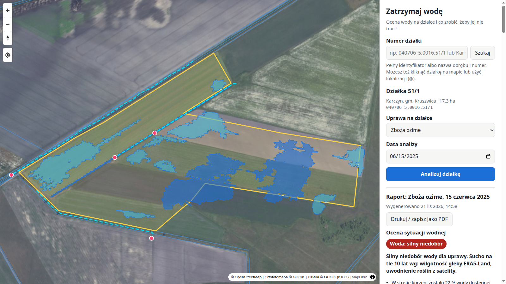
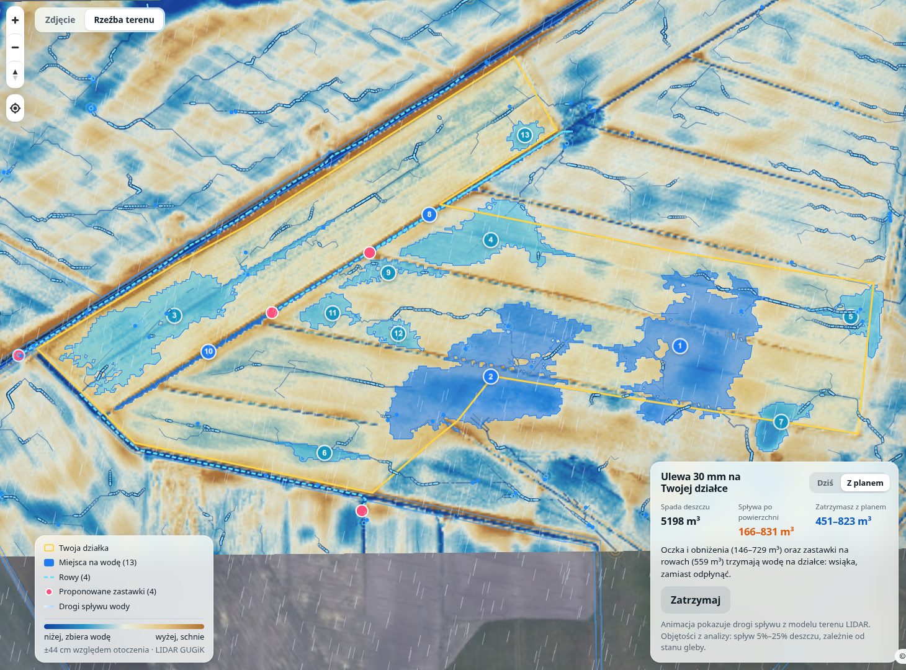
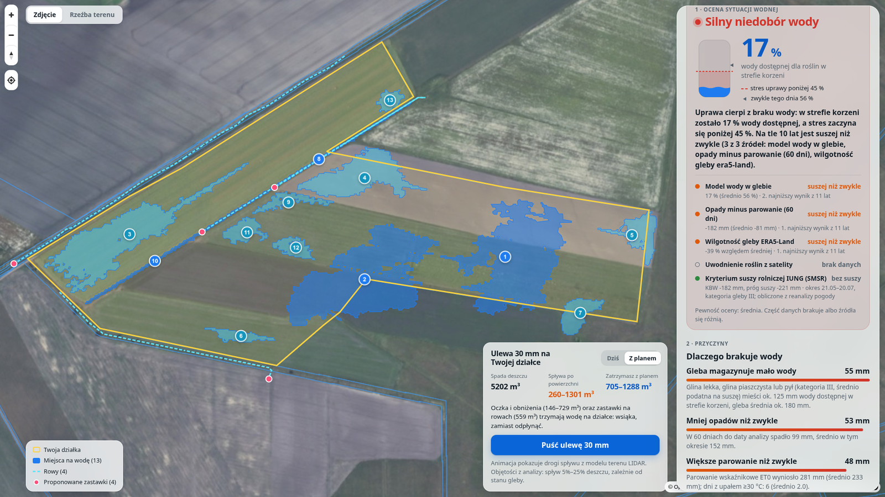
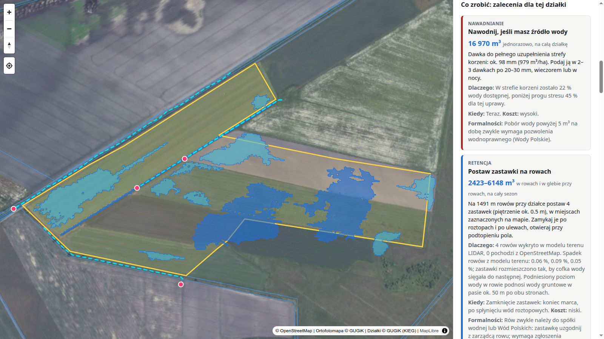

Numer działki, uprawa i data. W 30 sekund rolnik wie, czy brakuje mu wody, dlaczego, i gdzie dokładnie na swoim polu ile wody może zatrzymać.
Numer, nazwa obrębu, kliknięcie na mapie albo GPS. Uprawa i data: dziś lub do 10 lat wstecz.
Czy brakuje wody i jak bardzo nietypowo na tle 10 lat. Wiarygodność oceny.
Ile milimetrów zabrał brak deszczu, upał, słaba gleba, spływ.
Zastawki, oczka, próchnica, mulcz, nawadnianie: z efektem w m³, terminem, kosztem.
Przeglądarka na komputerze lub telefonie, bez instalacji i bez konta. Raport do druku i PDF.
Zastawki rozmieszczone według spadku rowu, tak by cofka wody sięgała do następnej.

Przełącznik „Rzeźba terenu”: cieniowana mikrorzeźba z LIDAR (±kilkadziesiąt cm) i drogi spływu. Widać niecki, bruzdy i rowy, których nie ma na zdjęciu.
„Puść ulewę 30 mm”: deszcz spływa po drogach z LIDAR do niecek i poza działkę. Liczniki: ile spada, ile spływa, ile zatrzyma plan.
Dziś: woda ucieka rowami
Z planem: zostaje na polu
Objętości pochodzą z analizy terenu; animacja je ilustruje.

Woda: silny niedobór
Źródła głosują osobno, „mokro” znosi „sucho”. Gdy IUNG nie stwierdził suszy, ocena kończy się na „uwadze”. Dla kontroli: Europejskie Obserwatorium Suszy.

Zastawki na rowach
Oczka i podmokłe łąki
Zadrzewienia śródpolne
Pas trawy przy rowie
Miedze w poprzek stoku
Próchnica, mulcz, międzyplon
Nawadnianie: m³, koszt, limit 5 m³/dobę
Łąki, pastwiska, sady
Dopasowane do działki: wąski pas na stoku dostaje miedze co 30 m, nie oczko. Z formalnościami (Prawo wodne, zarządca rowu) i dopłatami.

| Co liczymy | Metoda i źródło |
|---|---|
| Susza rolnicza | Kryterium SMSR IUNG-PIB: KBW sześciu dekad wobec progów z rozp. MRiRW (Dz.U. 2019 poz. 739) |
| Woda w strefie korzeni | FAO-56 (Allen i in. 1998): Kc i p dla 16 upraw, współczynnik stresu Ks |
| Gleba | Mapa kategorii glebowych IUNG; pojemność wodna: Saxton i Rawls (2006) |
| Zagłębienia i spływ | NMT LIDAR 1 m, wypełnianie zagłębień (priority-flood) i kierunki spływu |
| Działania | Kolejność KOWR „Podstawy naukowe”: retencja → agrotechnika → nawadnianie |
Test na 26 nietypowych działkach: góry, torfy, piaski, wąskie pasy, sady, las, 175 ha, 0,05 ha. Znalezione błędy poprawione; opis i ściąga do obrony w docs/metody-i-walidacja.md.
| Dane | Źródło | Szczegółowość |
|---|---|---|
| Działki, teren LIDAR, ortofotomapa | GUGiK: ULDK, NMT, KIEG | 1 m |
| Pogoda i ET0, 10 lat | Open-Meteo (ERA5), zapasowo NASA POWER | dziennie |
| Stan roślin NDVI/NDMI | Copernicus Sentinel-2 | 10–20 m, od 2017 |
| Gleba | ISRIC SoilGrids; kategorie gleb IUNG | 250 m, 0–100 cm |
| Susza rolnicza | SMSR IUNG-PIB: progi i tabele gmin | gmina, co dekadę |
| Susza hydrologiczna | IMGW-PIB | bieżące ostrzeżenia |
| Pokrycie terenu (czy to pole?) | ESA WorldCover | 10 m |
| Porównanie: wskaźnik suszy CDI | Europejskie Obserwatorium Suszy (Copernicus) | 5 km, co dekadę |
W raporcie każde źródło ma licencję i datę pobrania. Brakujące dane są nazwane wprost, nic nie jest zgadywane. Wynik liczy się bez AI: deterministyczne, opisane metody (FAO-56, IUNG).